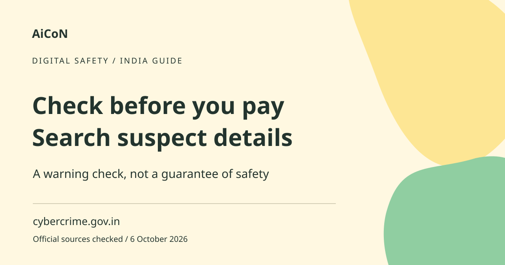

Suspect Repository: check payment details before paying
The National Cybercrime Reporting Portal lets you search suspect identifiers, such as a mobile number or UPI ID. It can provide a warning before payment. A clean result does not prove that a seller or account is safe.

What is the Suspect Repository?
It is a database built from cybercrime complaints filed by members of the public. I4C, the Indian Cybercrime Coordination Centre, provides the search through the government portal. An identifier is a piece of contact or payment information used to recognise an account or person online. The search page offers mobile number, email, bank account number, social media and UPI ID categories.
Why this matters for Kerala and India
A forwarded offer, used-phone deal or online job message can include a payment address that looks plausible. Before sending money, checking the exact details can give you another piece of evidence. But a scammer can create a new account or copy a real business name. Use this check with independent seller verification, written terms and caution about payment pressure.
How to use it, step by step
- Open cybercrime.gov.in yourself, then choose the Suspect Repository search route, or use the official search page linked below. Avoid a lookalike link sent by the seller.
- Choose the identifier type you want to check, such as a UPI ID or mobile number.
- Enter the exact identifier. The official page says not to add +91 when entering an Indian mobile number. Check for typing errors.
- Complete any verification shown by the page and run the search. Read the result and the disclaimer before deciding what it means.
- If a result is found, pause payment and verify the situation through independent contact details. Do not treat a complaint-based entry as a court finding or publish an accusation without further evidence.
- If no result is found, still verify the seller, payment recipient and terms. A new or unreported scam can be absent from the database.
- If you have suspect communications or identifiers to report, use the portal's Report Suspect facility. If money has already been lost, use the financial-cybercrime complaint route promptly instead of only reporting the identifier.
What a result can and cannot prove
The official disclaimer says I4C does not certify the authenticity of complaints; local police investigate them. The database is incomplete because criminals rapidly create, change and discard identifiers. It also acknowledges possible errors. A match is therefore a reason to investigate and pause, not conclusive proof of guilt. No match is not a safety certificate.
Already lost money?
Contact your bank or payment provider immediately through its verified channel and call the national cybercrime helpline 1930. Report through cybercrime.gov.in. Keep the transaction reference, screenshots, messages and recipient details. Act promptly; searching the repository should not delay urgent reporting. Recovery is not guaranteed. Do not pay a supposed recovery expert who asks for another transfer.
Cost, availability and privacy
The government search route is publicly available and does not advertise a paid subscription. It is relevant to Indian cybercrime reporting, including Kerala. Never pay a third party simply to run this search. Search only the information you actually need to assess a transaction. Do not forward full bank details or personal records publicly because a result appeared.
Frequently asked questions
Does no match mean safe?
No. The database is incomplete and new scams may not be reported yet.
Does a match prove someone committed a crime?
No. The official disclaimer says complaints are subject to investigation and errors are possible.
Can I search a UPI ID?
Yes. UPI ID is a category on the checked search page.
Is Report Suspect the same as reporting money lost?
No. If money is lost, use the official financial-cybercrime reporting route and contact your bank promptly.
Official sources
Checked 6 October 2026. Expanded from an AiCoN short post delivered in October 2026. Portal screens and rules can change.